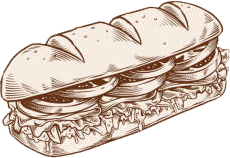
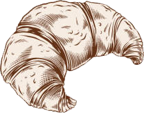
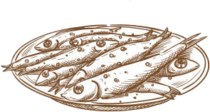
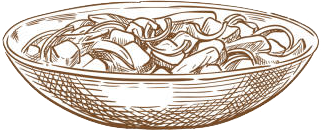
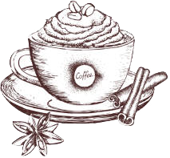
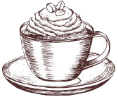
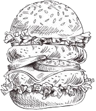
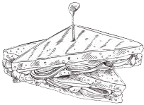

Предисловие
Приветствую всех поситителей нашего сайта. На этом сайте мы расскажем о нашем ресторане. В нём на данный момент работают 3 повара и 1 бариста. Тот кто работает у нас считается своего рода художником работающий с продуктами. Каждый из них уникален и вы сможете почувстовать отдельный мир приходя каждый раз к разному "художнику". Все они квалифицированы и за их плечами не один год работы в пищевой промышленности. У всех них отдельное место работы что будет создавать иллюзию похода в разные места, мы надеемся что вам понравится у нас и вы будете вдохновлены на новые действия. Главная просьба быть вежливым со всеми
Развитие
Развитие будет представленно и изменятся попутна достижениям в виде списка
Нанять пару подмастерьев для баристы
Купить второй магазин и нанять работников туда
Обустроить второй магазин
Создать и держать уважение ко всем кто работает и покупает в нашем ресторане
Создать целую сеть магазинов
Новости
Новости будут представленны за периуд за 7 дней до и после нынешнего момента
Новости будут представлены в виде списка перечисления
Сегодня день рождение повара по традиционной кухне. Нужно отпраздновать это(18.02.2022)
У повара по быстрой еде родилась дочка, давайте поздравим его с эти(21.02.2022)
Ищем уборищика и официанта(22.02.2022)
Повар по домашней кухне Эстонии
Повар родился и рос в Эстонии. На данный момент записи статьи ему 37 лет. Работает а кухне 10 лет трудившись не покладая рук. Если встретити его в ресторане то он люит душевную болтавню. Приятный и спокойный человек, способный поддерживать любую беседу. Любит детей может болтать с ними много времени, главное чтоб они не отвлекали его от работы. Его место рекомендуется семьям с детьми. Хоть там и дети но место довольно спокойное, по этому не стоит принибрегать этим местом для любого человека.(22.02.2022)

Повар по традиционной китайской кухни
Повар родился в Китае, маленьком городе. Он с детсва мечтал быть поворо, по этому он с малых лет смотрел как готовит его отец в его маленькой кафешке. Пошёл в проф. школу и отличился усердием и знанием. Сейчас ему 45 лет. Много чего поведал и готов делится своими знаниями со всеме. У него вы увидите как повор готовит в живую от простых блюд из обычных продуктов до сложнейших блюд, как например рыба фугу. Некоторые моменты малоприятны для вида, по этому не рекомендуется приходить с детьми, им может не понравится. Рекомендуется для тех кому интересно смотреть как повор готовит в живую и если есть желание с ним поговорить подушам.

Бариста из Сингапура
Бариста рождённый в сингапуре, думал в детсве что станет архитектором, но потом решил стать баристой так как влюбился в это дело.На данный момент ему 31 год, молодой и готов принимать советы если вы чемто не довольны. У него вы всегда будите чувствовать запах свежеприготовленного кофе. Вы увидите целую маленькую библиотеку для тех кто хочет почитать или отдать книги так как жалко выкидавать. Из всех мест это самое тихое. У него в арсенале больше 20 видов кофе и мы уверены что один из них вам точно понравится. Те кто зайдут никогда не пожалеют об этом. С детьми не желательно приходить, так же с алкогольными напитками

Повар с быстрой едой
Повар жил в детсве довольно бедно и не мог позволить себе нормальную еду, по этому ел полуфабрикаты и быструю еду. Из-за вредной диеты его отвезли в больницу с желудком. До этого момента он хотел быть повором в будущем, а после него он захотел готовить максимально здоровую быструю еду. Ему сейчас 37 лет, тренируется чтобы быть в форме, по этому люди часто удивляются когда видят его. Если у вас нету времени то можете к нему зайти, хоть он и глуповат но всегда рад встретить новый посетителей. Он так же любит детей и дети всегда играют с ним когда он выходит к столам. Добр и готовзащитить. У него не получится буянить, он сразуже выкинет такого человека. В обмен на его доброту он просит так же доброту не только к нему но и к остальным поситителем.

Оценка
Если вы побывали в нашем заведении то просим перейтина канкету и ответить на вопрсосы. Заранее будем благодарны за обратную информацию
Подписка
Для тех кто будет подписан на нас получет 10% скидки на один из "миров", выбирайте с умом